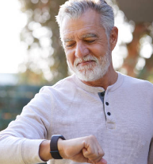
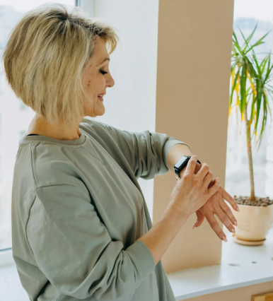

Active Safety
Reliable fall detection designed for the active UK lifestyle.

Wellness Hub
Gentle reminders and vitals tracking in a lightweight design.
The Vitality Station: Beyond Just Weight
Advanced metrics including bone density and muscle mass monitoring.
| Device | Key Benefit | Rating | Action |
|---|---|---|---|
| Apple Watch SE | Elite Fall Detection | ★★★★★ | Explore Deals |
| Samsung Galaxy 7 | Health Insights | ★★★★☆ | See Price |
| Hume Vitality Scale | Bone Density Tech | ★★★★★ | Check Details |
Community Voices
"Finally, a watch I can actually read without my glasses!" – Joan, Wembley
"The fall detection gives my daughter peace of mind." – Arthur, Neasden
Common Questions
Which smartwatch has the best fall detection?
The Apple Watch SE remains the gold standard for UK seniors in 2026 due to its intuitive interface and multi-network reliability.
Can a smartwatch monitor bone density?
Watches serve as the display hub, while the Hume Vitality Scale performs the BIA scan to track bone health over time.
How long does the battery last?
Most modern devices now offer 24-48 hours, with Fitbit models extending up to 6 days.